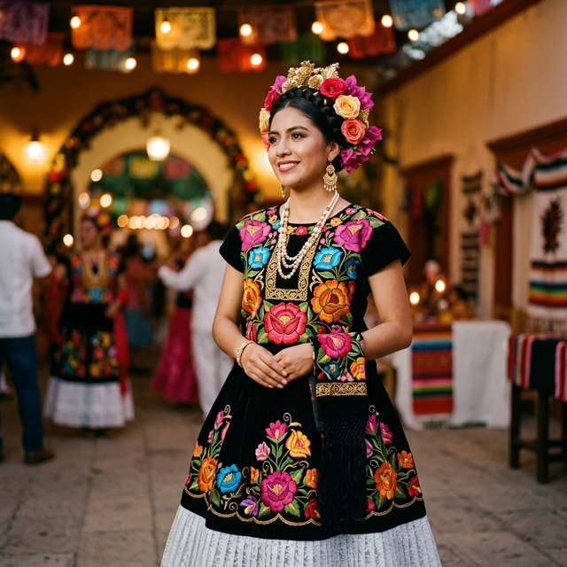

Ciudad Ixtepec tiene una magia especial cuando cae el sol. El viento del Istmo empieza a soplar, las luces del Palacio Municipal se encienden y el centro se convierte en un escenario de convivencia único.
Un Recorrido por el Centro
Caminar por el centro de Ixtepec de noche es una experiencia obligatoria. Ver la Casa de la Cultura iluminada, sentir la historia en sus fachadas y disfrutar del ambiente familiar es parte del encanto de vivir aquí.

El Cierre Perfecto
Tanto paseo abre el apetito. El destino final más lógico para cualquier caminata nocturna es Mr. Papas. Estamos ubicados justo en el corazón de este circuito nocturno, ofreciendo el refugio perfecto con aire fresco o un espacio acogedor para disfrutar de una hamburguesa doble.
¿Planeando salir hoy? Haz del centro tu paseo y de Mr. Papas tu meta. ¡La ciudad te espera!